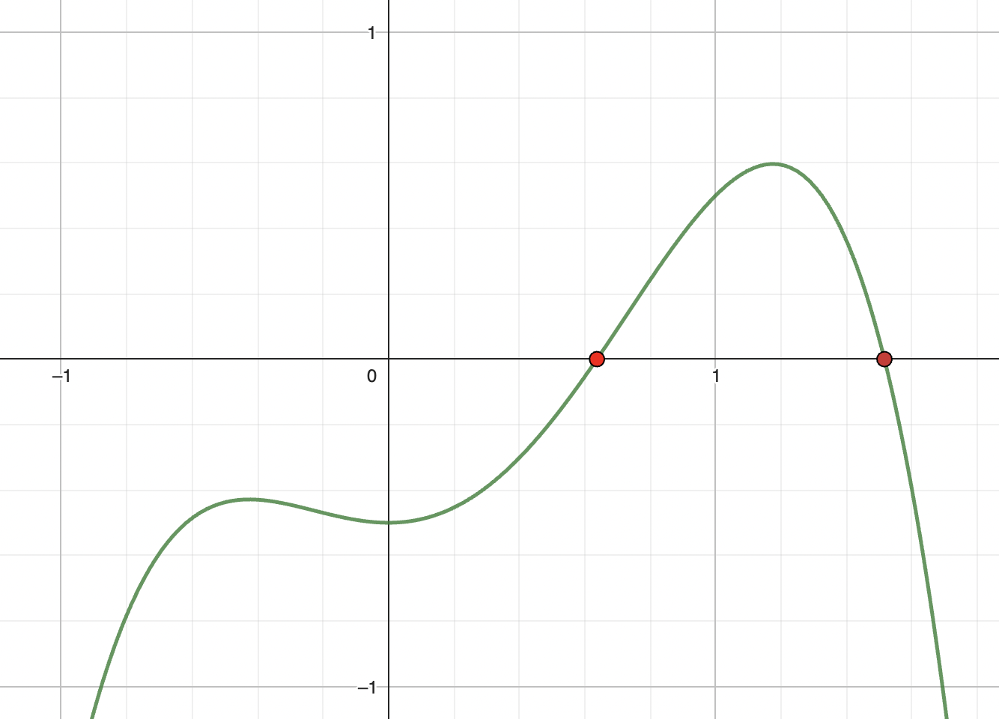

Exploring ways computers can solve mathematical equations

A brief introduction to the Newton-Raphson Method
Hidden Calculations
Computers play a crucial role in performing mathematical calculations that are an essential part of many applications, including:
Scientific Research
solve complex equations and simulations of physical phenomena
Financial Analysis
financial modeling and risk analysis
Gaming and Entertainment
physics simulations, graphics rendering, and animation
Transportation
traffic modeling, route optimization, and vehicle design.
Marketing and Advertising
data analysis and customer profiling
Sports
analyze motion, biomechanics, and performance data
Computers perform many different algorithms, called numerical methods, to solve mathematical equations. The Newton-Raphson Method is one such algorithm that is used to solve equations.
Basic Equations
Before diving in, let's first refresh our memory by starting with a basic, linear equation:
\( x + 1 = 0 \)
Ordinarily, we can solve it two ways. Check them out below.
To solve algebraically, we isolate x using basic addition, subtraction, multiplication or division.
$$ \begin{align}x+1 &= 0 \\
x + 1 - 1 &= -1 \\
x &= -1\end{align} $$
When an equation can be solved for an exact solution just by using these basic operations, we say that it can be solved analytically.
Computers can solve all linear equations analytically. However, as equations get more complicated, we'll find many that cannot be solved this way.
To solve graphically, we can plot the equation as a line on a graph. The solution is where the line intersects the x-axis. Click on the correct ● solution below.
x
y
-2
-1
-1
0
0
1
1
2
2
3
While computers do not solve basic linear equations graphically, they do use graph properties to solve more complex equations - especially ones that cannot be solved analytically!
Graphs of equations
Since graphs will help us solve more complex equations, let's get some practice!
Build your own equation and try to estimate the solution based on the graph!
\( y = \)
1
\( x^3 + \)
1
\( x^2 + \)
1
\(x + \)
1
Try approximating a solution based on the graph:
The easiest way to check is to substitute it back into the equation and see if we get zero!
1
·
\(^3 + \)
1
·
\(^2 + \)
1
·
\( + \)
1
=
While we can use our eyes to estimate the x-intercept point for this small range, computers will need a more algorithmic way to find it. They use something called tangents.
Tangents
A tangent is a straight line that touches a curve at a single point. Since computers can easily handle straight lines, tangents allow computers to process more complicated curves.
Click the ● below for the tangent line at that point.
What do you notice about the tangent lines as you get closer to the x-intersect solution?
We can see that as you move along the curve, where the tangent line crosses the x-axis also gets closer and closer to the solution. We'll use this property in an algorithm called the Newton-Raphson method.
The Newton-Raphson Method
For the Newton-Raphson method, we strategically draw a series of tangent lines until we get to an approximation that's close enough to the solution. Let's try it with the below graph of \(y=x^2-2 \). (Scroll to zoom)
Step 1: Make a guess for the solution.
Click ● to guess x = 2.
Click ● to guess x = 1.5.
Click ● to guess x = 1.417.
Step 2: Find the actual point where this is on the graph and draw its tangent line.
Click ● to draw the tangent
Step 3: Find where the tangent intercepts the x-axis. Check if this is a solution.
x=1.5
x=1.417
x=1.414
Step 4: If not yet a solution, use this as the next guess and repeat steps 1-3.
(y=0.25) ❌
(y ≈ 0.01) ❌
(y ≈ 0.00) ✓
And that's it! We reached the solution! Let's try a couple more times on the next page.
Other Examples
Click on an equation to try it:
\(y = 4 \ln(x) - x\)
\(y = \sin(x) - x^2 \)
\(y = \sqrt[3]{x}\)
Step 1: Make a guess for the solution.
Click ● to guess x = 6.
Click ● to guess x = 9.5.
Click ● to guess x = 8.645.
Step 2: Find the actual point where this is on the graph and draw its tangent line.
Click ● to draw the tangent
Step 3: Find where the tangent intercepts the x-axis. Check if this is a solution.
x=9.5
x=8.645
x=8.613
Step 4: If not yet a solution, use this as the next guess and repeat steps 1-3.
(y ≈ -0.49) ❌
(y ≈ 0.02) ❌
(y ≈ 0.00) ✓
Step 1: Make a guess for the solution.
Click ● to guess x = 1.
Click ● to guess x = 0.891.
Step 2: Find the actual point where this is on the graph and draw its tangent line.
Click ● to draw the tangent
Step 3: Find where the tangent intercepts the x-axis. Check if this is a solution.
x=0.891
x=0.877
Step 4: If not yet a solution, use this as the next guess and repeat steps 1-3.
(y ≈ -0.02) ❌
(y ≈ 0.00) ✓
Step 1: Make a guess for the solution.
Click ● to guess x = 1.
Click ● to guess x = -2.
Click ● to guess x = 4.
Step 2: Find the actual point where this is on the graph and draw its tangent line.
Click ● to draw the tangent
Step 3: Find where the tangent intercepts the x-axis. Check if this is a solution.
x=-2
x=4
x=-8
Step 4: If not yet a solution, use this as the next guess and repeat steps 1-3.
(y ≈ -1.26) ❌
(y ≈ 1.59) ❌
(y = -2) ❌
Hold on! There's something wrong here! In this case, we see that we are getting further and further away from the solution. This is one possible case where the Newton-Raphson method fails since the tangents diverge instead of converge to a solution. In this case, we would need to look to other numerical methods to solve this equation.
Digging Deeper
Would you like to see the mathematical formula for the Newton-Raphson method going on behind the scenes?
Yes
No
The formula for the next guess \( x_{n+1} \) after guess \(x_n\) is:
$$ x_{n+1} = x_{n} - \frac{f(x_n)}{f'(x_n)} $$
We can try using this formula with the same equation as before and get the same results!
Find a root of \( f(x) = x^2 - 2\) with an initial guess at \(x_0=2\).